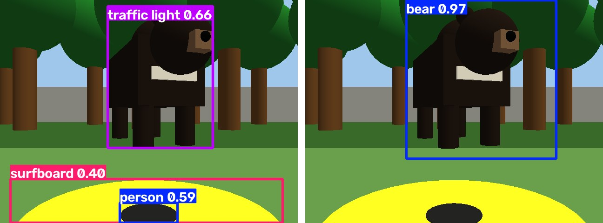
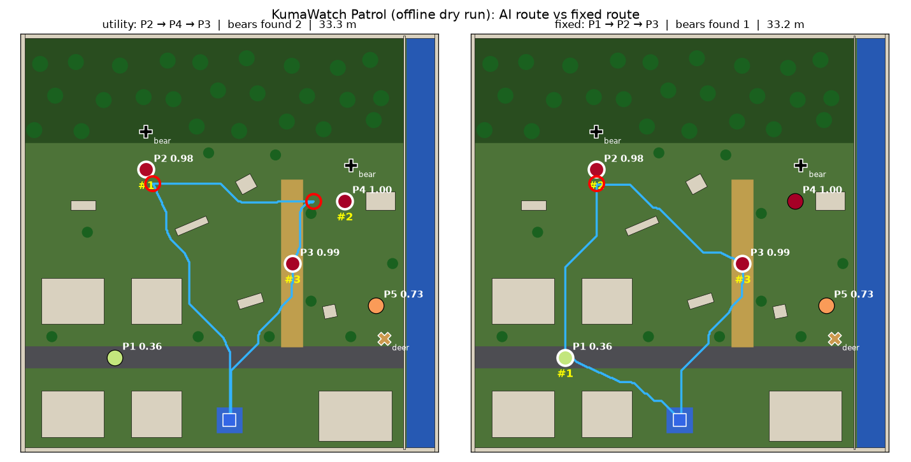
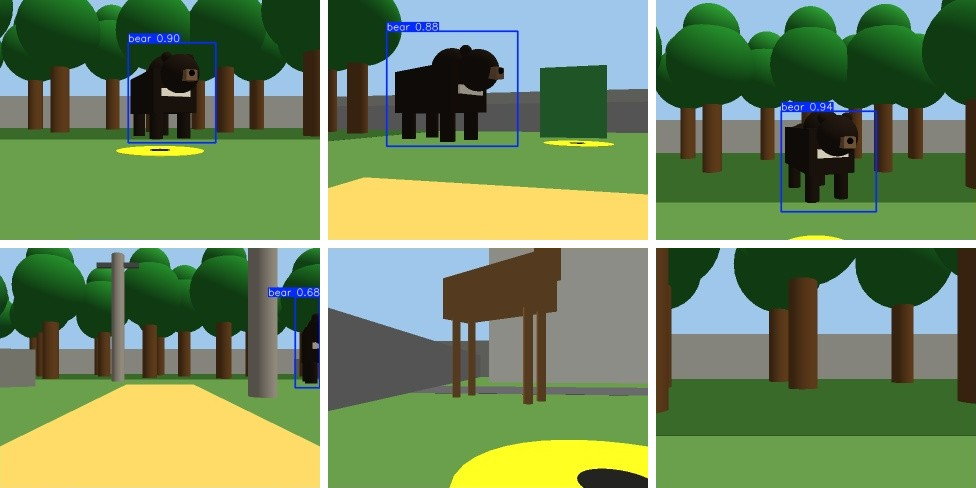

近年、熊の人里への出没が増え、自治体は通学路やごみ集積所などの見回りに追われている。しかし人員には限りがあり、 「明日はどこを見に行くべきか」を限られた数だけ選ぶ必要がある。筆者らの研究 KumaWatch では、山形県・秋田県の 公開出没データを 10 km グリッドに集計し、翌日の出没リスクが高いセルを上位 K 個選ぶ問題として、 複数の予測手法を比較してきた。一方、予測はあくまで地図上の数値であり、実際に現場を確認し、熊がいれば安全に 行動する部分は人に委ねられている。本作品では、この「予測から現場確認まで」をロボットで具体化する。
NavigateToPose アクションでつながる。
ソフトウェアは 5 つの ROS 2 パッケージで構成した（表1）。ワールドと Nav2 用の地図は、同じ定義ファイル
（world_layout.yaml）から自動生成するので、SLAM で地図を作らなくても座標が一致する。熊とシカは地図に載せず、
ロボットにとって未知の障害物として LiDAR とカメラで見つける。
| ノード | 役割 |
|---|---|
risk_predictor | TTM の予測を 5 地点のリスクとして配信し、RViz に棒グラフで表示 |
mission_planner | 地点選択・巡回順の決定、Nav2 への移動指示、熊検知時の停止・記録、結果表示（状態機械） |
bear_detector | カメラ画像を YOLOv8 で判定し、LiDAR の距離から熊の地図上の位置を推定 |
image_recorder | カメラ映像と検出枠入りの映像を状態表示付きで録画、熊検知時の静止画を保存 |
bear_proximity_monitor | 熊の既知座標との距離で検知する簡易版（比較・動作確認用） |
表1 主なノード。状態機械は RISK_ASSESSMENT → ROUTE_PLANNING → PATROL ⇄ OBSERVE → (EMERGENCY_STOP) → RETURN_TO_BASE → FINISHED と遷移する。
リスク予測には、KumaWatch が公開している IBM Granite TinyTimeMixer（TTM 1536-96-R2）の予測を使った。 TTM は大量の時系列で事前学習された時系列予測の基盤モデルで、KumaWatch では山形県 144 セルの日別出没件数の履歴から、 学習に使っていない 2025 年の各日の出没をゼロショットで予測している。作品の町は架空だが、5 地点のリスクには 実在セルの予測値を割り当てた（表2）。割り当ては次の規則による：2025 年 6 月 7 日に実際に出没があった 2 セルを P2・P4 とし、 Gazebo でもそこに熊を置く。出没がなかったセルからは、TTM 順位が最も高いもの（P3、AI の空振り）、40 位付近（P5）、 100 位付近（P1）を選んだ。リスクは県内 144 セル中の順位を百分位にした値である。
| 地点 | 環境 | セル | TTM 順位 | リスク | 実際の出没 | Gazebo の熊 |
|---|---|---|---|---|---|---|
| P4 | ごみ集積所 | 5_1 | 1 / 144 | 1.000 | あり | あり |
| P3 | 通学路 | 4_1 | 2 / 144 | 0.993 | なし（空振り） | なし |
| P2 | 林縁 | 1_10 | 4 / 144 | 0.979 | あり | あり |
| P5 | 河川沿い | 6_0 | 40 / 144 | 0.727 | なし | なし（シカ） |
| P1 | 住宅地 | 1_0 | 93 / 144 | 0.357 | なし | なし |
表2 5 地点に割り当てた TTM の予測（2025 年 6 月 7 日、山形県 10 km グリッド）。
リスクだけでなく、社会的重要度と移動コストを考えた効用で地点を選ぶ。
pi はリスク、wi は重要度（通学路 1.2、住宅地 1.1、他 1.0）、di は詰所からの距離 [m]、 λ＝0.02 である。Ui の上位 3 地点を選び、詰所から回って戻る総移動距離が最小になる順を全順列で求める。 今回は P2（林縁）→ P4（ごみ集積所）→ P3（通学路）となった。比較用に、リスクだけで選ぶ方式と固定ルートも実装した。
mission_planner は Nav2 の NavigateToPose アクションで各地点へ移動し、到着後に一定時間周囲を確認する。
熊の検知を受け取ると、移動中のゴールをキャンセルしてゼロ速度で停止し、熊の位置・時刻・距離・信頼度を記録する。
熊を追跡せず、止まって記録してから次の地点へ向かう。巡回後は詰所へ戻り、結果を端末・RViz・ファイルに出力する。
COCO で学習済みの YOLOv8 にも「bear」クラスはあるが、Gazebo の熊（基本図形の組み合わせ）は信号機や人と誤認された（図2 左）。 そこで Gazebo の画像で追加学習（ファインチューニング）した。カメラと熊・シカをランダムな位置に動かしながら 700 枚を撮影し、熊の 3D 位置を画像へ投影して正解の枠を自動で付けた。木や建物で隠れる視点は除き、熊が写らない画像も 3 割含めた。 学習済みの YOLOv8n を初期値に追加学習した（図2 右）。

bear_detector は、検出枠の横位置からカメラに対する熊の方位を、その方位の LiDAR の値から距離を求め、
ロボットの自己位置と合わせて熊の地図上の位置を推定する。LiDAR が手前の木を拾った場合は、枠の高さからの推定に切り替える。
誤検出で止まらないよう、3 フレーム連続で検出し、かつ 4 m 以内に近づいたときに停止を指示する。

| 指標 | 固定巡回（P1→P2→P3） | AI 巡回（P2→P4→P3） |
|---|---|---|
| 巡回地点数 | 3 | 3 |
| 熊の発見数 | 1 | 2 |
| 移動距離（Nav2 による走行） | 28.8 m | 32.5 m |
| 所要時間（シミュレーション時間） | 152.6 s | 153.8 s |
表3 同じ 3 地点・同じ熊の配置での比較（詰所への帰還を含む）。本物の Nav2（AMCL・NavFn・DWB）と本作品の地図・パラメータを、 差動二輪とレイキャスト LiDAR の簡易シミュレータ上で動かした値で、熊は既知座標で判定した。
同じ 3 地点を回る条件で、AI 巡回は熊を 2 頭、固定巡回は 1 頭見つけた。移動距離は AI 巡回の方が 3.7 m 長いが、 所要時間はほぼ同じだった（AI 巡回は熊の手前で止まって次へ向かうため）。ただし、これは 1 日・1 配置のシミュレーションの結果であり、 「AI が一般に優れている」ことを示すものではない。実際、1 年を通した評価では、山形県で TTM は単純な静的予測（過去の平均）に有意に劣っている。

巡回中の 11 視点（P2・P4 への接近と到着、熊のいない P1・P3・P5、シカ、林縁など）では、熊が写る視点はすべて検出し（信頼度 0.88〜0.98）、 シカ・木・建物を熊と誤認しなかった。ROS 2 ノードとしても、Gazebo のカメラ映像から熊を検出し、停止指示のメッセージを出すことを確認した。